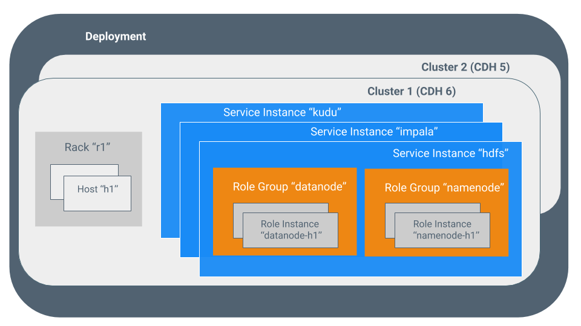
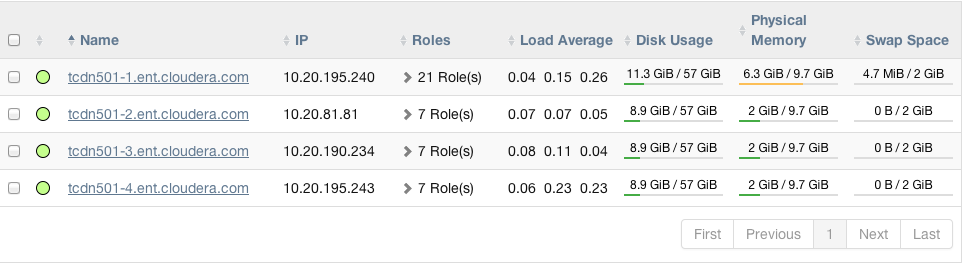
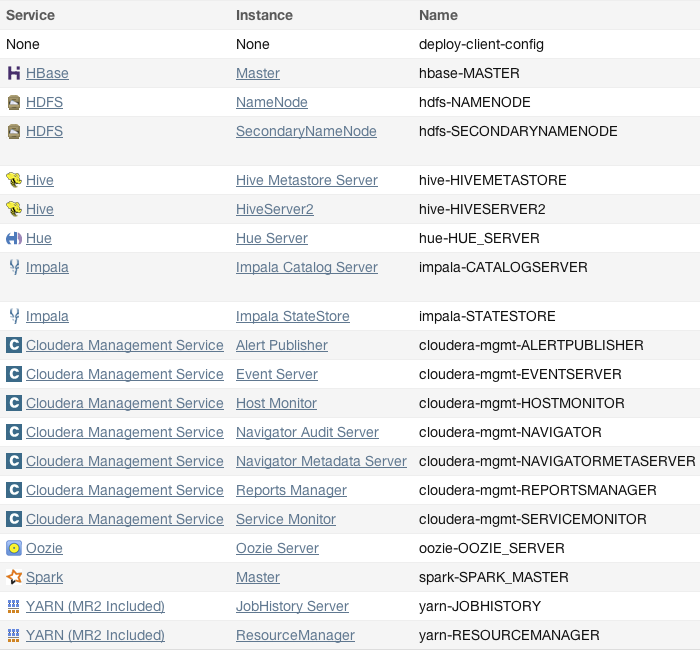

Terminology
To effectively use Cloudera Manager, you should first understand its terminology. The relationship between the terms is illustrated below and their definitions follow:

Some of the terms, such as cluster and service, are used without further explanation. Other terms, such as role group, gateway, host template, and parcel are explained in the below sections.
Sometimes the terms service and role are used
to refer to both types and instances, which can be
confusing. Cloudera Manager and this section sometimes use the same
term for type and instance. For example, the Cloudera
Manager Admin Console tab and the menu list service instances.
This is similar to the practice in programming languages where the term
"string" might indicate a type (java.lang.String) or an
instance of that type ("hi there"). Where it is necessary to distinguish
between types and instances, the word "type" is appended to indicate a
type and the word "instance" is appended to explicitly indicate an instance.
deployment
A configuration of Cloudera Manager and all the clusters it manages.
dynamic resource pool
In Cloudera Manager, a named configuration of resources and a policy for scheduling the resources among YARN applications or Impala queries running in the pool.
cluster
- A set of computers or racks of computers that contains an HDFS filesystem and runs MapReduce and other processes on that data. A pseudo-distributed cluster is a CDH installation run on a single machine and useful for demonstrations and individual study.
- In Cloudera Manager, a logical entity that contains a set of hosts, a single version of CDH installed on the hosts, and the service and role instances running on the hosts. A host can belong to only one cluster. Cloudera Manager can manage multiple CDH clusters, however each cluster can only be associated with a single Cloudera Manager Server or Cloudera Manager HA pair.
host
In Cloudera Manager, a physical or virtual machine that runs role instances. A host can belong to only one cluster.
rack
In Cloudera Manager, a physical entity that contains a set of physical hosts typically served by the same switch.
service
- A Linux command that runs a System V init script in
/etc/init.d/in as predictable an environment as possible, removing most environment variables and setting the current working directory to /. - A category of managed functionality in Cloudera Manager, which may be distributed or not, running in a cluster. Sometimes referred to as a service type. For example: MapReduce, HDFS, YARN, Spark, and Accumulo. In traditional environments, multiple services run on one host; in distributed systems, a service runs on many hosts.
service instance
In Cloudera Manager, an instance of a service running on a cluster. For example: "HDFS-1" and "yarn". A service instance spans many role instances.
role
In Cloudera Manager, a category of functionality within a service. For example, the HDFS service has the following roles: NameNode, SecondaryNameNode, DataNode, and Balancer. Sometimes referred to as a role type. See also user role.
role instance
In Cloudera Manager, an instance of a role running on a host. It typically maps to a Unix process. For example: "NameNode-h1" and "DataNode-h1".
role group
In Cloudera Manager, a set of configuration properties for a set of role instances.
host template
A set of role groups in Cloudera Manager. When a template is applied to a host, a role instance from each role group is created and assigned to that host.
gateway
A type of role that typically provides client access to specific cluster services. For example, HDFS, Hive, Kafka, MapReduce, Solr, and Spark each have gateway roles to provide access for their clients to their respective services. Gateway roles do not always have "gateway" in their names, nor are they exclusively for client access. For example, Hue Kerberos Ticket Renewer is a gateway role that proxies tickets from Kerberos.
The node supporting one or more gateway roles is sometimes referred to as the gateway node or edge node, with the notion of "edge" common in network or cloud environments. In terms of the Cloudera cluster, the gateway nodes in the cluster receive the appropriate client configuration files when Deploy Client Configuration is selected from the Actions menu in Cloudera Manager Admin Console.
parcel
A binary distribution format that contains compiled code and meta-information such as a package description, version, and dependencies.
static service pool
In Cloudera Manager, a static partitioning of total cluster resources—CPU, memory, and I/O weight—across a set of services.
Cluster Example

